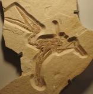
Pterodactyluswiki-fr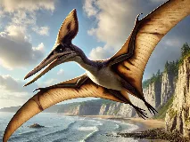
Pteranodonwiki-fr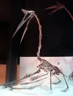
Quetzalcoatluswiki-fr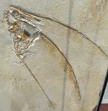
Rhamphorhynchuswiki-fr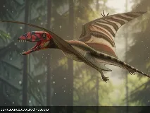
Dimorphodonwiki-fr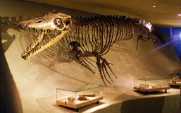
Mosasauruswiki-fr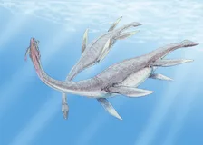
Plesiosauruswiki-fr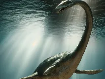
Elasmosauruswiki-fr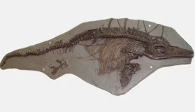
Ichthyosaurusbing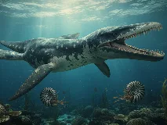
Liopleurodonbing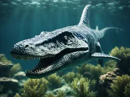
Kronosauruswiki-fr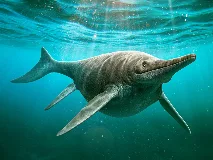
Shonisauruswiki-fr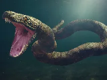
Titanoboawiki-fr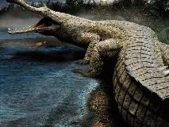
Sarcosuchuswiki-fr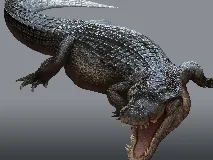
Deinosuchuswiki-fr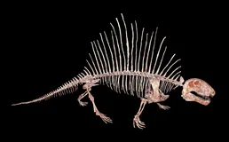
Dimetrodonwiki-fr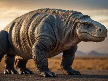
Lystrosauruswiki-fr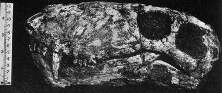
Gorgonopswiki-fr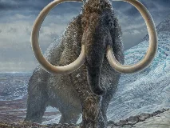
Mammouth laineuxwiki-fr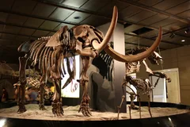
Mastodontewiki-fr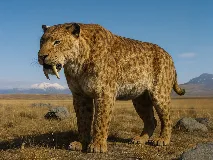
Smilodonwiki-fr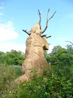
Megatheriumwiki-fr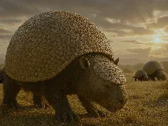
Glyptodonwiki-fr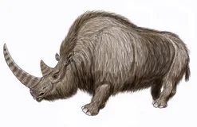
Rhinocéros laineuxwiki-fr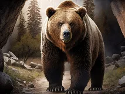
Ours des caverneswiki-fr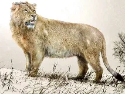
Lion des caverneswiki-fr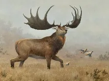
Megaloceroswiki-fr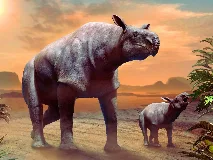
Paraceratheriumwiki-fr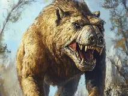
Andrewsarchuswiki-fr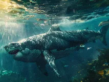
Mégalodonwiki-fr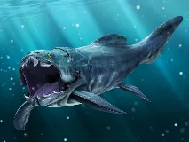
Dunkleosteuswiki-fr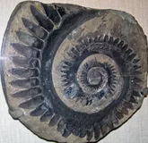
Helicoprionwiki-fr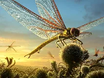
Meganeurawiki-fr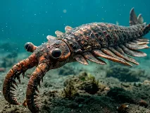
Anomalocariswiki-fr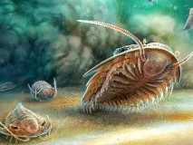
Trilobitewiki-fr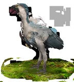
Gastorniswiki-fr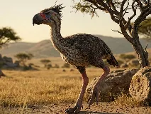
Phorusrhacoswiki-fr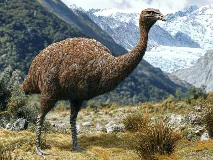
Moawiki-fr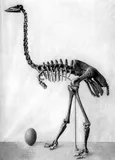
Aepyorniswiki-fr